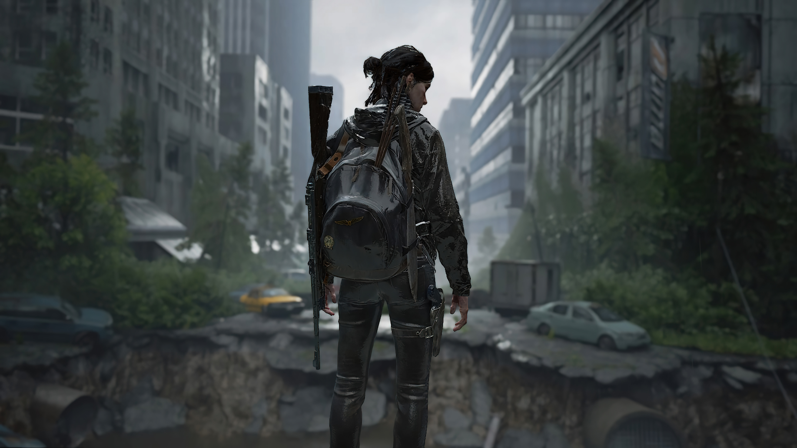

Ellie

The Last Of Us
Um dos melhores jogos
Resultado de imagem para analise the last of us 2 The Last of Us Part II pode ser uma história onde a vingança ganha um papel de destaque, mas ela é uma história de sobrevivência, acima de tudo. As personagens estão lutando a todo instante, seja contra zumbis, humanos, o mundo ou até mesmo contra elas mesmas e seus sentimentos.
R$299,99000